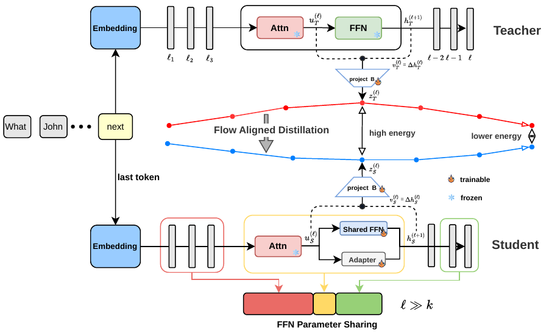
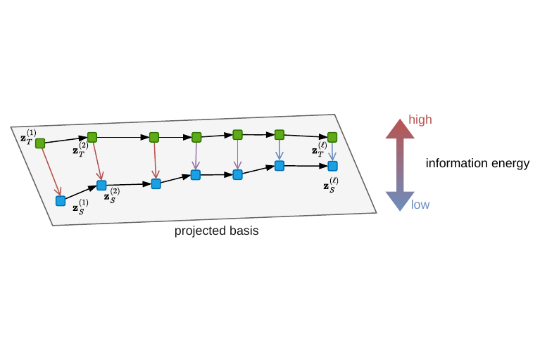
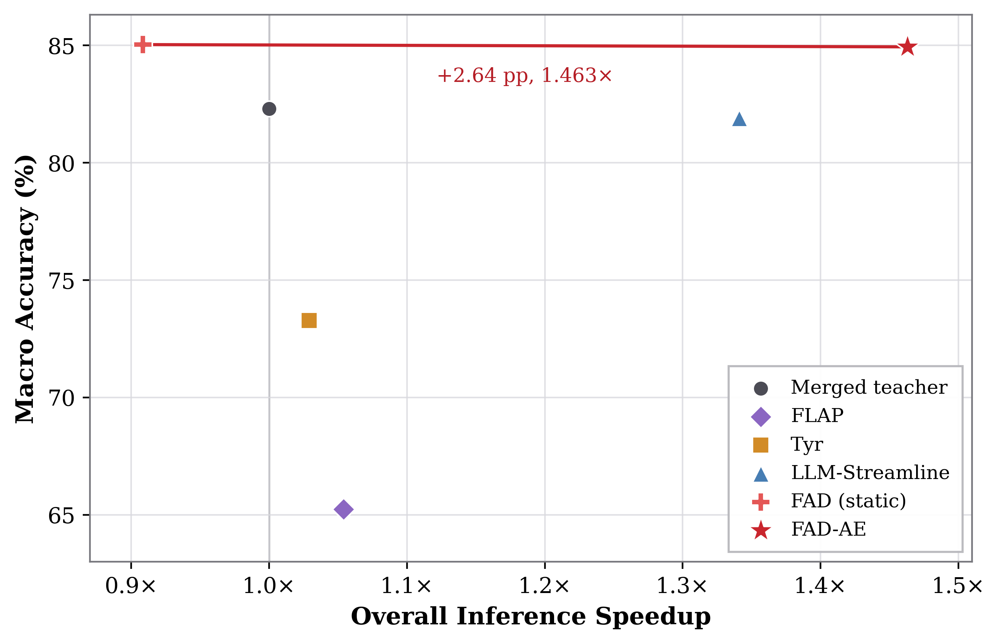
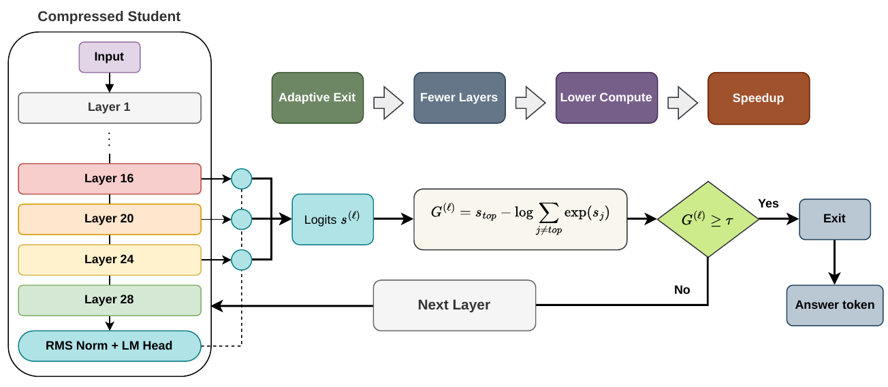
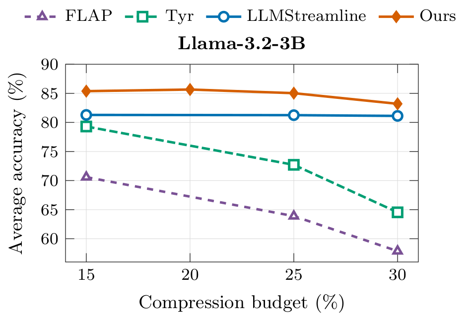
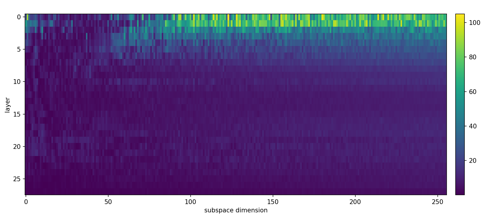
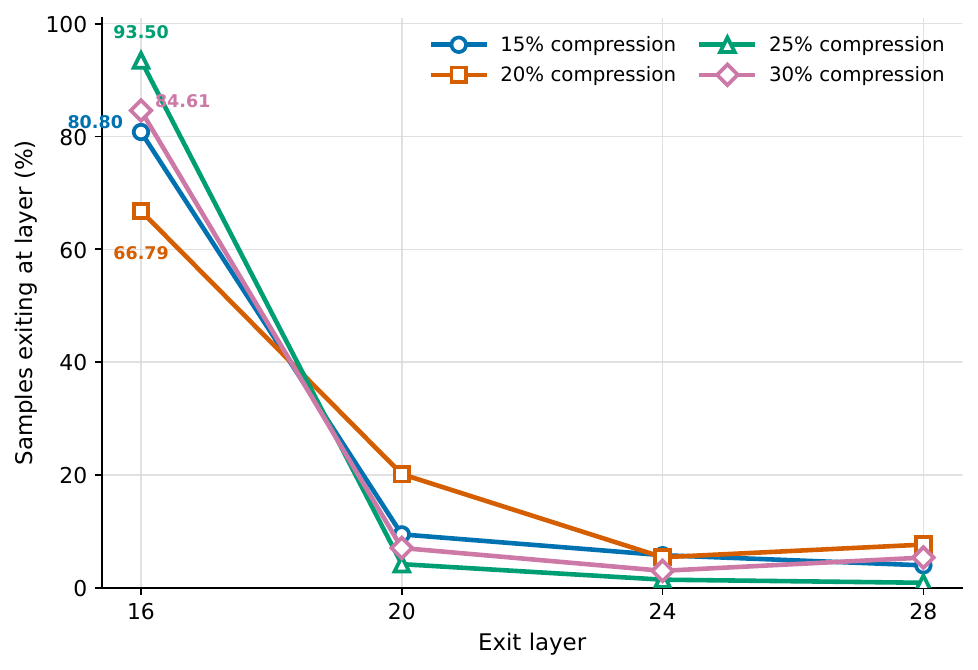

20% compression
Research portfolio · audited 31 Jul 2026
Compress the weights.
Preserve the flow.
FAD shares redundant feed-forward networks while aligning the student's layer-wise residual transport to a teacher-derived information geometry. A calibrated adaptive-exit controller then spends depth only where a question needs it.
01 Llama‑3.2‑3B · seven-task zero-shot evaluation · H100 runtime
Teachertransport geometry

28 → 17 FFNs
exits 16·20·24
−0.10 pp vs static
vs merged teacher
41.47% layer saving
02 / ResultsOne model family,
One model family,
four operating points.
The selected seed‑44 checkpoints are the latest restricted-late runs. Switch budgets to inspect static and adaptive performance, prototype count and exit behavior.
25% compression85.03%
static macro accuracy
84.94% with adaptive exit
Unique FFNs17 / 28
Average exit16.39
Own-full speedup1.573×
Accuracy Δ−0.10 pp
Exit distribution
Accuracy frontier
FAD stays above the merged teacher across all four budgets.
Latest selected static and adaptive checkpoints; macro-average over seven tasks.
Reproduced comparison
Against three structured-compression papers
| Method | 15% | 20% | 25% | 30% |
|---|---|---|---|---|
| FLAP | 70.59 | 68.00 | 63.89 | 57.87 |
| Týr-the-Pruner | 79.30 | 76.16 | 72.71 | 64.54 |
| LLM-Streamline | 81.29 | 81.82 | 81.25 | 81.12 |
| FAD · latest | 85.38 | 85.66 | 85.03 | 83.20 |
Protocol audit: current FAD artifacts record length_norm=none; archived baseline wrappers defaulted to avg and did not persist the field. The repository preserves the reported results, while new public wrappers standardize future reruns to none.
03 / MethodFrom redundant layers
From redundant layers
to reusable functions.
Observe transport
Hook the teacher's post-attention FFN residual update at the last prediction token. This local velocity is the behavior FAD preserves.
Build geometry
Project transport into a shared velocity-PCA basis and estimate layer-wise teacher covariance. Low-variance directions receive stronger penalties.
Share by function
A hard FFN-input gate plus held-out functional complete-link clustering selects a restricted late-layer sharing policy.
Recover & exit
Train with decision CE + whitened point CORE. At inference, a four-feature controller chooses layers 16, 20, 24 or the full layer 28.

04 / DeploymentStatic portfolio.
Static portfolio.
Real GPU demo.
GitHub Pages presents the research without a backend. The included inference service mounts licensed checkpoints on a CUDA host and compares the 25% adaptive student with its merged teacher.
01Browseroffline UI
→02Python serviceGPU lock + scorer
→03Two modelsstudent + teacher
Paired questions19,149
Student-only wins1,189
Teacher-only wins836
Student net advantage+353

Metric clarity
1.465× aggregate, 1.388× task-wise geomean.
Both values come from the same H100 batch‑1 job. The first divides total throughput; the second geometrically averages seven per-task speed ratios. The data card stores both.
Read the deployment guide →05 / Visual evidenceThe research,
The research,
made inspectable.




06 / ReproduceEvery number has
Every number has
a path back to code.
Raw evaluator artifacts, compact CSVs, controller JSON, baseline adapters, exact pipeline snapshots and portable Slurm wrappers live together.
terminal
$ export FAD_WORKSPACE_ROOT=/scratch/fad
$ export FAD_TEACHER_CKPT=/models/teacher
$ export FAD_CANONICAL_ROOT=/artifacts/atlas
$ bash reproduction/fad/scripts/run_all_budgets.sh
$ export FAD_DEPLOY_BUNDLE=/artifacts/25pct/deploy_bundle.pt
$ bash reproduction/fad/scripts/run_adaptive_exit_budget.sh 25